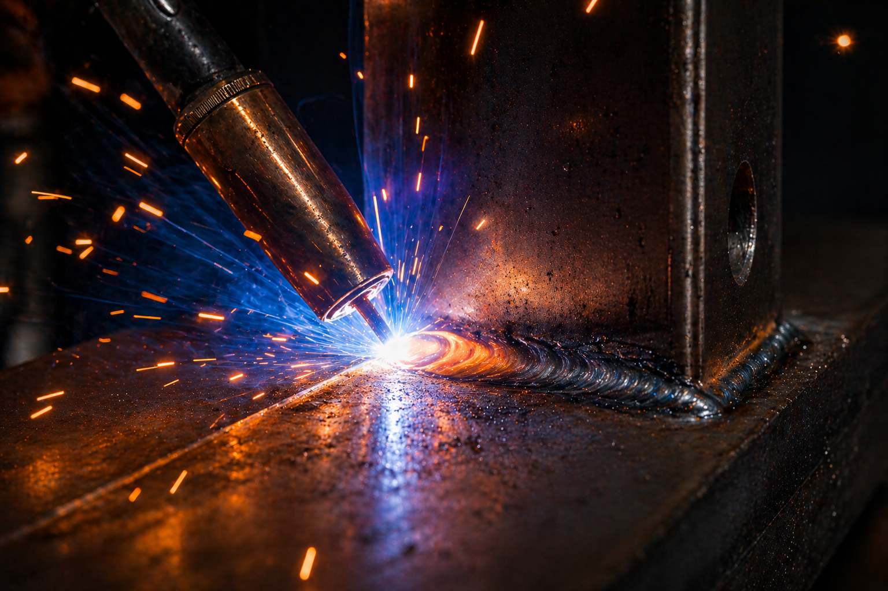
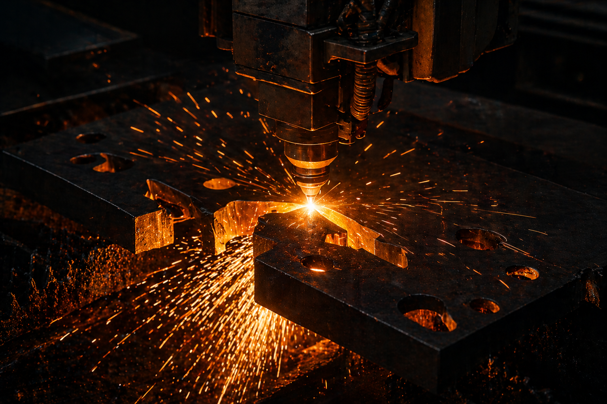
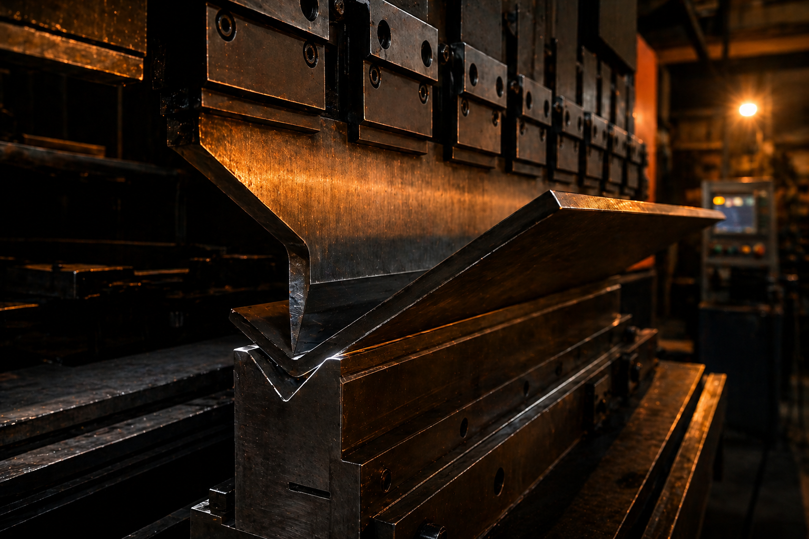
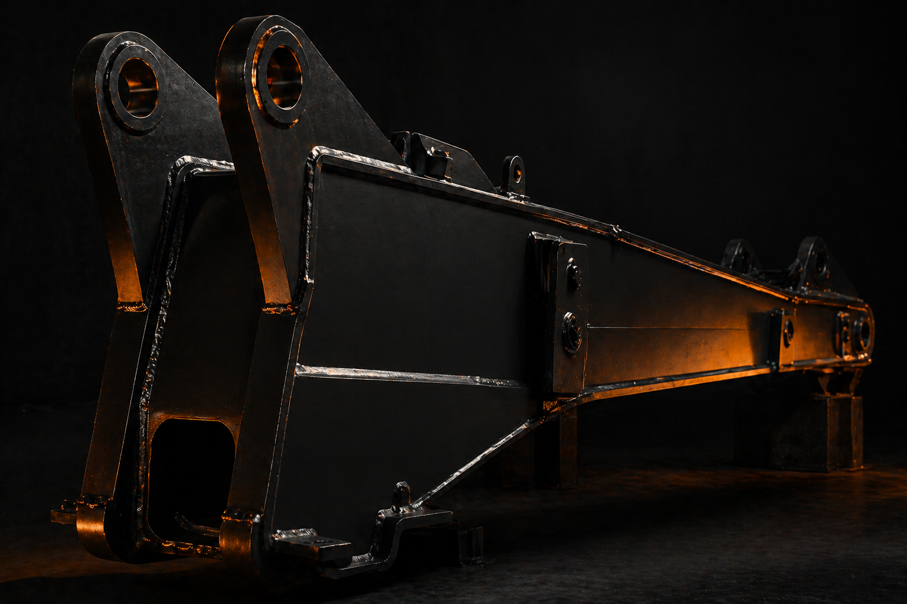
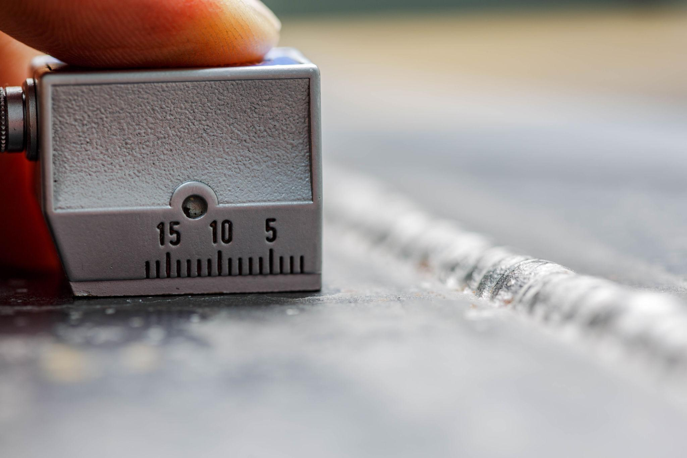

Kaynaklı imalat, CNC kesim, büküm, mekanik montaj ve NDT — hepsi kendi atölyemizde, mühendis denetiminde.

● Kaynaklı İmalat| Sınıf | Açıklama | fy min | Kaynak Notu |
|---|---|---|---|
| Grup 1S235 · S275 | Yapısal karbon çeliği | 235–275 MPa | Standart WPS |
| Grup 1.2S355 J2+N | Yapısal orta mukavemet | 355 MPa | EN 1090 EXC3 |
| Grup 3 · QTS690 QL | Su verme + temperleme | 690 MPa | Ön ısıtma · EN 1011-2 |
| Grup 3 · QTS960 QL NİŞ | Ultra-yüksek mukavemet | 960 MPa | Özel WPS + H5 sarf malzeme |
| Grup 3 · TMCPS700 MC NİŞ | Termomekanik haddeleme | 700 MPa | Isı girdisi ≤ 1.5 kJ/mm |
| Sınıf | Açıklama | fy min | Kaynak Notu |
|---|---|---|---|
| Grup 8304 · 316 L | Östenitik paslanmaz çelik | — | Ayrı atölye · kontaminasyon sıfır |
| AşınmaHARDOX 400/450/500 | Aşınmaya dayanıklı (Ar çeliği) | 1000+ MPa | Kepçe · zırh · konveyör |
| AşınmaRAEX 400/450 | Aşınmaya dayanıklı | 1200+ MPa | Yüksek aşınma uygulamaları |
| P-GrubuP265GH · P355NH | Basınçlı kap çeliği | 265–355 MPa | PED Kat. I–II · EN 13445 |
| Hafif Metal · 9606-2EN AW 5754/6082 | Alüminyum alaşımı (TIG) | — | EN ISO 9606-2 belgeli kaynakçı |

● Hassas Kesim
● CNC Büküm
● Mekanik Montaj
● NDT · Kalite Kontrol